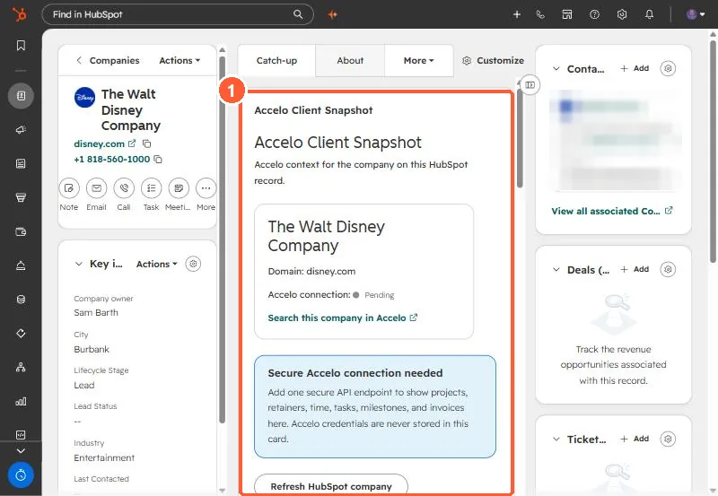

Short answer
An app card runs in the browser, so it cannot hold another system's credentials, and HubSpot's docs say serverless functions in app cards need an Enterprise subscription. Our upload failed with "your HubSpot plan doesn't include serverless functions." The design we shipped: a script syncs our project management data into company properties, the card renders those properties, and a Sync now button writes a request flag that a watcher picks up, syncs, and answers by updating accelo_last_synced.
1. What we wanted
Our agency tracks projects, tasks and hours in a separate project management tool. We wanted a card on each HubSpot company record showing that client's active projects, open tasks and hours logged against budget, with a button to refresh it.


2. Why the first build failed
The first version called the outside API from a serverless function. hs project upload failed the function build with "your HubSpot plan doesn't include serverless functions." HubSpot's docs list an Enterprise subscription for serverless functions in app cards. The card itself cannot call the outside system with secrets, because it runs in the user's browser.
3. The design that works
- Properties hold the data. Company properties such as
accelo_active_projects,accelo_open_tasks,accelo_hours_logged,accelo_hours_budgeted,accelo_last_synced, and one JSON property with project and task detail for the card to render. - A script syncs them. It holds the credentials, matches companies (an explicit ID property first, then website domain, then exact name), and writes the properties. It runs nightly for everything.
- The button writes a flag. Sync now writes a timestamp to
accelo_sync_requestedon that record through the HubSpot API, then polls untilaccelo_last_syncedchanges. - A watcher answers it. The script's watch mode checks for records with the flag every 15 seconds, syncs them, stamps last synced, and clears the flag.
4. Trade-offs
- The button only works while the watcher is running, so it runs as a scheduled task at logon.
- Data is as fresh as the last sync. The card shows the last synced time so nobody mistakes it for live.
- With Enterprise you could move the sync into a serverless function and drop the watcher. The card would not change much, because it already reads properties.